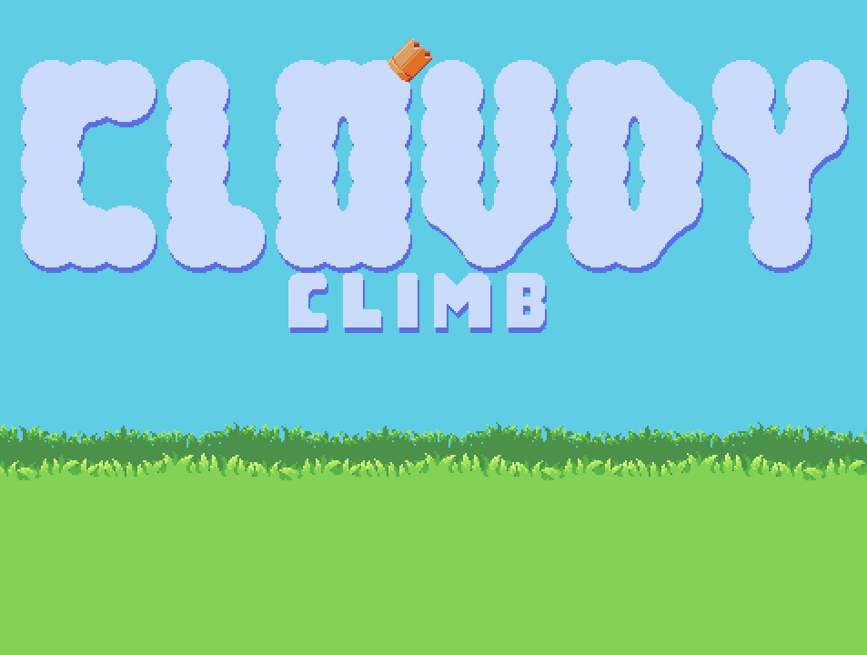
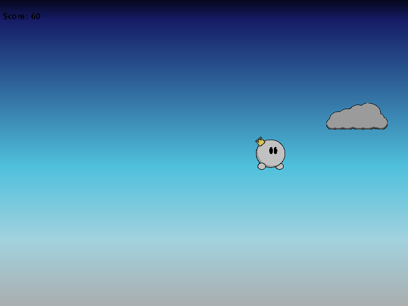
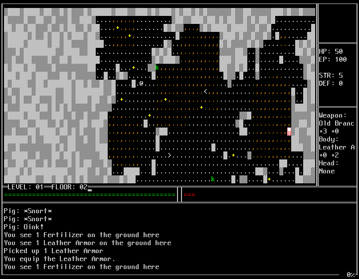
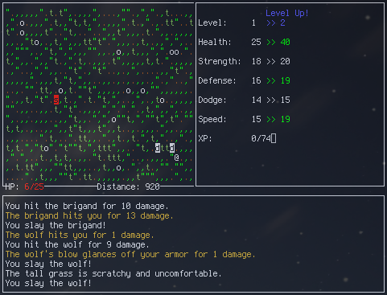

Contributions
Game Projects
Cloudy Climb (2018)
Completed
Genre: Platformer
Core Breaker
Completed
Genre: Action
Cloudy Climb (2015)
Completed
Genre: Platformer
AMAZE
Completed
Genre: Puzzle
Space Douchebag
Completed
Genre: Shmup
Game Jam Entries
Growgue
Completed
Genre: Roguelike
To the West
Completed
Genre: Roguelike
Day of the Hotdog
Completed
Genre: Action
Something Something Office…
Completed
Genre: Roguelike
Doomsday Darren Goes Fishing
Completed
Genre: Action
Diamond Rush
Completed
Genre: Action
A Wheelie Good Time
Completed
Genre: Action
Chainsaw Deathrace
Completed
Genre: Puzzle

Cloudy Climb
A re-imagining of the original Cloudy Climb, and the first complete game made with DFGame. The game discards the infinite stylings of the original for a tighter level-based format, with a total of 10 levels.
Controls
- Z: Select(menu)/Jump/Bounce
- Left/Right: Move left/right
- Escape: Pause/Quit
Download the Game
Links

The Last Light
An ordinary day on the subway to pick up your brother, Lucas, has turned into a living nightmare. A mysterious power outage has trapped you underground, and you soon discover you are being hunted in the dark.
Last Light is a first-person horror game for the PC where you play as Sophie, a high school student, who is desperately trying to reach her brother. Your only hope for survival is your flashlight and other light sources you find along the way. Good luck, you'll need it.
Contributions
- Monster visuals and AI
- Light detection system
Download the Game

Core Breaker
A simple twin-stick shooter developed for my Console Programming class. Core Breaker was my original test game for dfgame, and was developed for both desktop and web play. The goal of the game is simply to destroy enemy ships that appear, and a progress tracker at the top of the screen displays how many kills you've achieved.
Controls
- WASD: Move
- Arrow Keys: Fire
- E: Use bomb
Play the Game
HTML5 Version (Requires a modern web browser. Google Chrome is recommended)
Cloudy Climb
A minigame created to test DFEngine's capabilities. DFEngine is no longer in development, but the game lives on. The aim of the game is to bounce off of clouds to get as high as possible. The player can wrap around the screen to reach far-away clouds.
Controls
- Spacebar: Start the game
- W: Jump (only needed to begin)
- A/D: Move left/right
- R: Restart the game
Links

AMAZE
A simple little puzzle game, inspired in part by games like Chip's Challenge. The object of the game is to clear each of the four zones, then escape the final zone. Each zone has a different theme, and new mechanics and puzzles are introduced throughout the game. There are 35 levels in total, ranging from simple to fiendishly difficult.
The game was first publicly showcased at the Green Mountain Games Festival, where it was fairly well received. The final game had a lackluster release, however, due to naive design choices made early in development. Just for fun, here's an example: The level loader has no support for prefabs, so all objects had to be fully defined from scratch every time I used them. Even a simple improvement like making coins sparkle when you pick them up would've been a nightmarish task of herculean proportions, even with the excessive use of scripts and macros.
Needless to say, I took those lessons to heart.
Links

Space Douchebag
You are Space Douchebag, the greatest douchebag in the universe. When your swag is stolen by aliens, it's up to you to exact your vengeance!
This game was made for my Graphics I class during my Sophomore year of college. It started as a generic space shooter, becoming Space Douchebag when I couldn't think of a good reason to have my protagonist fly around shooting aliens. From there, I came up with the concept of making ship's hitbox a manifestation of Space Douchebag's ego, which shrinks when shot. The game was intended to be much longer, but content was cut due to time constraints. It's still fun, though, and I think it's actually one of the better entries in my collection. I plan to eventually revisit it and produce a remake.
My friend and colleague, Peter Orzell, composed a wonderful original soundtrack for the game. I recall him mentioning that another artist contributed to the first boss theme, Earth Mover, but I don't know who it is so I am unable to properly credit them. It's also possible that I'm misremembering things and they never existed.
Controls
- Enter: Begin game
- Arrow Keys: Move
- Z: Fire
- X: Toggle Douchebag Power
- C: Enter Focus Mode
Links

Growgue
@ Symbol, a brave young farmer, was out for a stroll on his farm when his cat Cuddles ran down into the gaping staircase to the deadly Caves of Consternation! @ Symbol had been meaning to patch that up for a while, but hadn't gotten around to it yet. Don't judge.
Will you help @ Symbol retrieve his cat, Cuddles?
Made for 7DRL 2016.
Growgue is a roguelike with a unique farming mechanic. Patches of fertile soil can be found throughout the game, and once tilled they can have seeds planted in them. This was intended to be the player's main source of food, items, and utility abilities (such as planting traps and vines that could take you to other levels). However, a deadly combination of Business, Laziness, and Bugginess kept this game from ever reaching its full potential. It's technically complete, but pretty confusing and half-baked.
Controls
- Numpad: Move, navigate menus
- Spacebar: Select menu items
- Further controls are listed in-game
Source Code
Linux Source Code (Should work on windows, in theory, but I haven't tested any windows builds)
To the West
The foul warlock Mochus has stolen the Band of the Stars, bringing it to his fortress deep in the western mountains. Journey to the Western lands, find the band, and slay this dark warlock once and for all!
Made for 7DRL 2015.
For this game, I decided to try something a bit different: The map is a giant line, going from the point where you start in the east to the final boss far to the west. The map will not scroll up or down, and you have little reason to travel to the right. Instead, you spend most of the game going to the left and dealing with whatever you find.
The game featured a number of really cool features during development, such as a faction system that caused NPC infighting and allied NPCs. However, many features had to be scrapped due to a number of memory-related errors. I would've tried to fix them, but since this was a game jam entry I didn't have enough time. The game itself still works, however
Controls
- hjkl: Navigate menus
- Spacebar/Enter: Select menu items
- Further controls are listed in-game
Links
- Windows Binary
- Source Code (Windows/Linux)

Day of the Hotdog
The Hotgod has been awakened, and he has begun to wreak his baleful and meaty vengeance upon the planet! However, he will let you live-as long as you can amuse him by grilling meat on the barbecue. How hard could it possibly be?
Made for the Summer Game Jam.
One of the few games ever made using DFEngine, Day of the Hotdog was, in fact, built entirely off of a bad pun. DFEngine was quite limited at the time that I made it, so I took extra care when coming up with game ideas. It had to be a game without actual levels, in 2D, with few features besides a physics engine. As a result, bouncing hotdogs on a barbeque seemed like a pretty obvious summer mechanic. And really, once you're there how could you not add a mechanic centered around knocking bald eagles out of the sky, then catching and grilling them on your barbeque? It's the American way!
Links

Something Something Office Rampage
You've just been downsized by Ivil Incorporated, a completely legitimate and not secretly performing dark and twisted scientific experiments in hidden laboratories deep below the earth business, and you must go on a murderous rampage that involves painting the walls with blood (a feature missing from far too many roguelikes) and stealing office supplies.
Made for 7DRL 2014.
Something Something Office Rampage was my first 7DRL entry, and also my first Roguelike. As a result, I didn't really take a lot of risks, unlike every other roguelike that I've made since then. When thinking up of a setting, my thought process was something along the lines of: What if Dilbert lost his mind one day and went on a rampage? Wait, office workers are still too boring of an enemy. …But what if Dilbert was working for the Umbrella Corporation and had no idea?
From that jumbled mess arose a decent little hack'n'slash roguelike. If I had to charge SSOR with a crime, it would be being too long and repetitive. It as good ideas, and it's entertaining, but it wears out its welcome by stretching the content out too much. I think at the time I expected most 7DRL entries to be quite long, so I tried to pad the game out by making the player traverse around 45 floors when 10-20 would've been enough.
Controls
- Spacebar: Advance text
- ?: Show help
- Further controls are listed in-game
Links

Doomsday Darren Goes Fishing
Fire a rocket-powered, remote controlled claw out to sea, and grab fish to sell! Buy upgrades like more fuel to go farther out, or a bigger claw to catch bigger fish! The ultimate goal is to catch Big Red, a huge legendary whale with rubies growing out of its back.
Made for Fishing Game Jam 2013.
This project was never ported to Windows, even though I had every intention of doing so. It was my first time using CMake as my build system, and due to issues getting it to compile my work on Windows I quit in disgust. Despite the fact that the CMake issues were caused by my inexperience, it still turned out to be a great decision. Not only did I become really good at writing makefiles by hand (and by extension, deciphering giant arcane blocks of code), this also eventually led to my adoption of the Meson build system, which is, in my humble opinion, far better than CMake in every respect. All's well that ends well, right?
Another interesting thing about this game is the recurrence of the "protagonist" of A Wheelie Good Time, Doomsday Darren. I was going to try and fit this character into my games periodically, but as of now (September 2016) he's yet to make a return. Like many of my games, this game suffers from being too long for its own good. Because the content of the game is spread too thinly, it loses its appeal long before you actually complete it.
The game's soundtrack was composed by Peter Orzell, a good friend and colleague of mine.
Game Instructions
- Move your claw with the mouse.
- Run into creatures to collect them.
- After getting the shrink ray, click and hold to fire it.
- The shrink ray is for submerged creatures(like sharks and whales). Just hold it over them, then collect them like any other creature.
- Press Escape at any time to quit.
- With the money you earn from catches, you can make upgrades after each run. Try and catch Big Red!
Enemies:
- Seagull: 10 points, and +1 to multiplier
- Fish: 50 points
- Puffer Fish: 150 points
- Eel: 500 points
- Shark: 2,500 points
- Whale: 15,000 points
- Chest Filled with Spanish Doubloons: 500,000 points
Links
- Linux Download (Source+Binary)
- Development Album

Diamond Rush
You are the mighty Diamond Titan, placed deep within a cave to ward off would-be heroes who might seek the Macguffin that you guard. However, you forgot one thing: The only thing heroes love more than plot points is loot! Hop for your life, Diamond Titan!
Created for Global Game Jam 2013.
I think this is one of my better game jam entries. I recall that part of the jam's theme was a heartbeat sound, and I didn't want to make a game with a heart. I figured most people would just put hearts in their games, and that I needed to find a different interpretation of the sound. So, I decided that the sound was the footsteps of something huge hopping and skipping around. Then, I needed a reason to make it hop in the first place, and the story of the Diamond Titan was born.
The game's soundtrack was composed by Peter Orzell, a good friend and colleague of mine.
Game Instructions
You direct movement via the orange cursor, which is controlled with the mouse. The Titan will automatically try to jump to it. Be warned, though: You cannot control it while it's in the air. The heroes will damage you if you land on/near them. If you run out of health, it's Game Over.
Score Values
- Collect purple crystals for 50 points each.
- Completing a level will give you 100 points times the level number.
- Every point of health remaining when you win give you a 25 point bonus.
Links

A Wheelie Good Time
You are a wheelie bad dude. You'd like to go destroy the city, but your doctor told you that you need exercise. That's when you get a cunning plan (because that's how you roll, of course) to destroy and exercise at the same time! What could go wrong?
I swear these puns get more stale every year.
The game was originally called Ultramarathon of Doom, which was decent but slightly misleading, so I ended up changing it. After all these years, I honestly don't know how or why I came up with this concept. The jam's theme was "You are the villain", but where did the giant city-crushing wheel come from? It's a mystery.
The game's soundtrack was composed by Peter Orzell, a good friend and colleague of mine.
Controls
- WASD: Move/Jump
- Left Click (Hold): Shoot
Links

Chainsaw Deathrace
Control 3 plucky teenagers as they escape a crazed chainsaw-wielding maniac! There's a catch, though: they've already lost a few limbs.
Created for a game jam at Champlain College.
Technically, this is my second game jam entry. Unfortunately, the first game was lost to the sands of time so it's missing from the list. Chainsaw Deathrace came from my desire to make a Halloween-themed game. I wanted to make a game about a generic masked horror movie killer, but the jam's theme was "disability". Naturally, playing as a terrifying masked killer isn't a huge disability on its own, so I turned my attention to the victims: Billy, Sammy, and Fred. I decided to make a horror-movie roguelike about a bunch of already-attacked teenagers, but I was a terrible programmer at the time so I just made a single level by hand. I was working on an actual-roguelike remake of the game, but never finished. I still want to make the game eventually, but it likely won't happen for a very long time.
Fun Fact: If you play the game perfectly, by taking the right doors, you will never encounter the Chainsaw Killer.
Controls
- Arrow Keys: Move
- ,: Pick up an item
- All other actions are taken by clicking on buttons